Levantamento das condições do lote e do entorno antes de qualquer serviço: calçada, quintal, fundos e divisas.
Placa com o alvará de demolição afixada no portão e instalação de tela de proteção nas divisas.
Retirada do telhado e das telhas, demolição das alvenarias internas e acúmulo do entulho para remoção.
Corte e retirada dos pisos, limpeza do quintal, retirada de materiais antigos e preparo do solo para a obra.
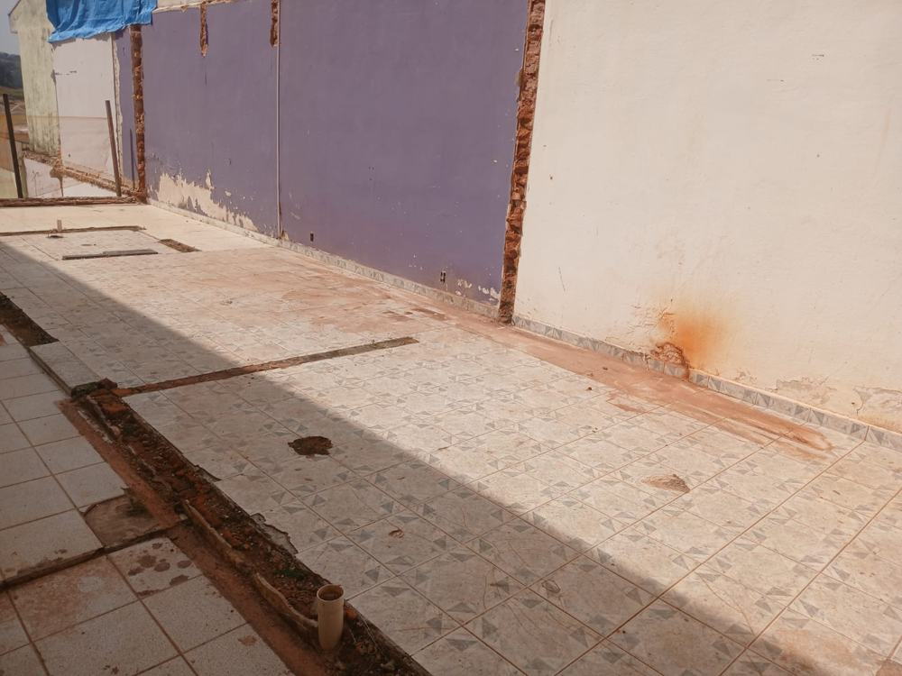
Cortes no piso cerâmico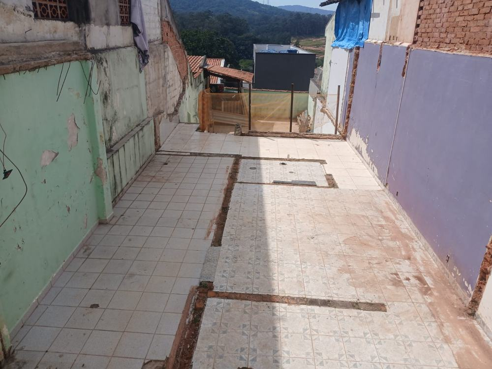
Piso cerâmico com juntas abertas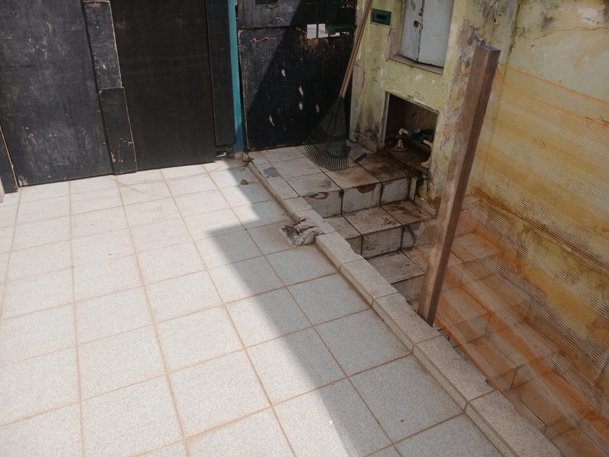
Piso e degraus remanescentes junto ao portão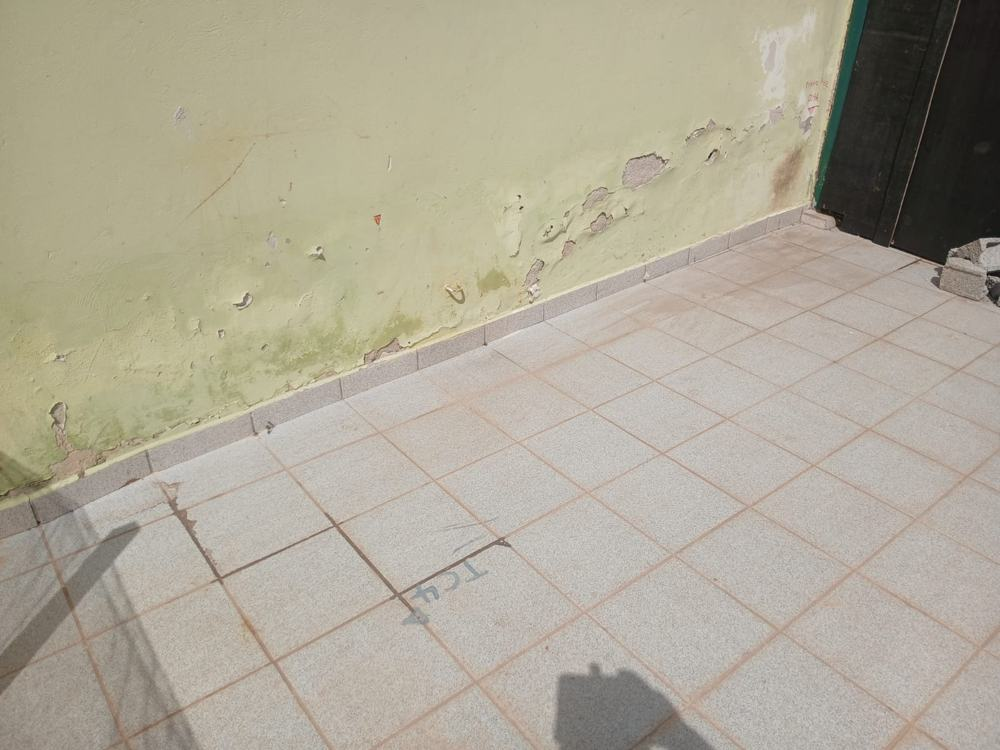
Piso remanescente com marcações de campo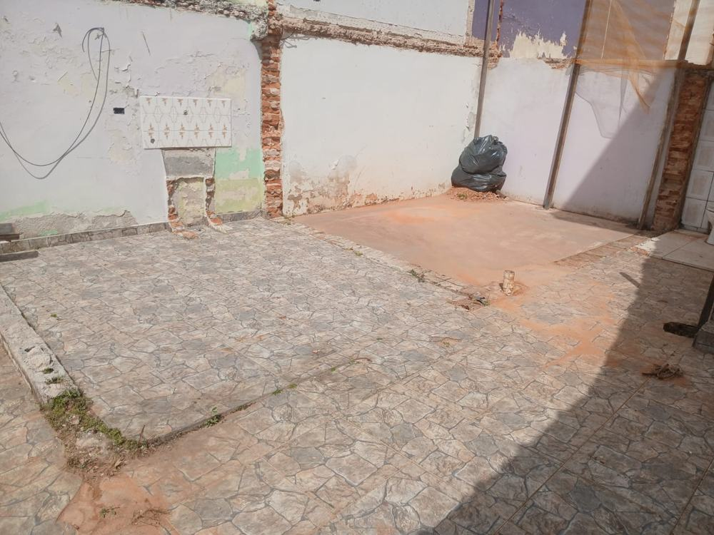
Área de contrapiso exposta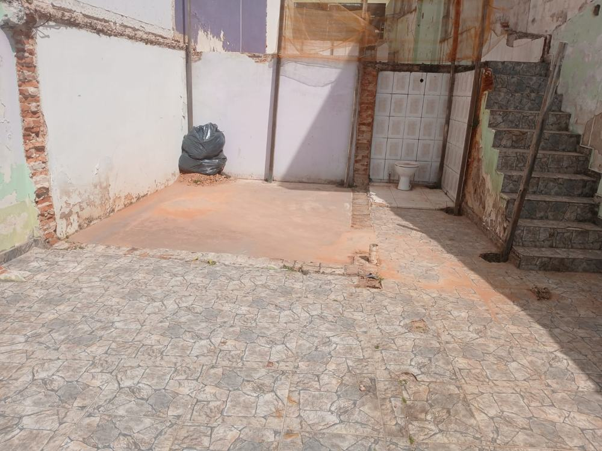
Quintal com piso removido em parte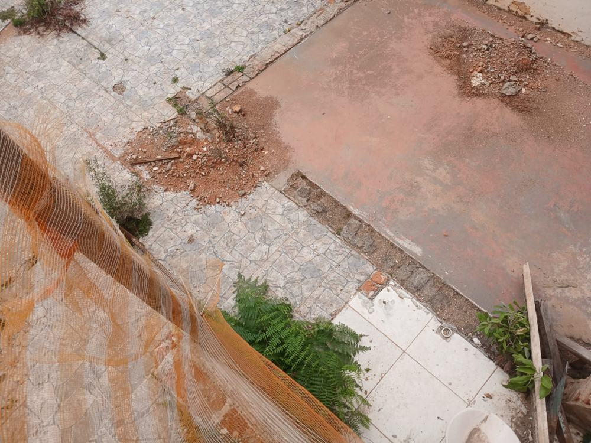
Retirada do piso e solo exposto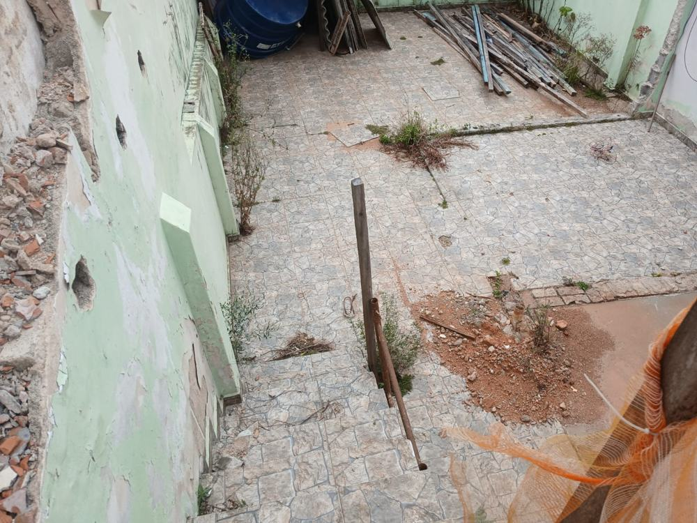
Quintal visto da escada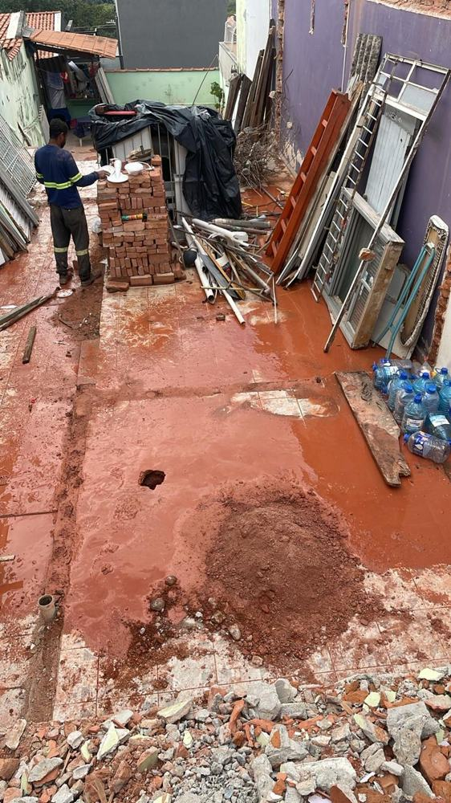
Solo exposto e limpeza do entulhoPerfuração do solo com trado helicoidal acoplado à escavadeira, abertura dos furos e montagem da armação em aço.
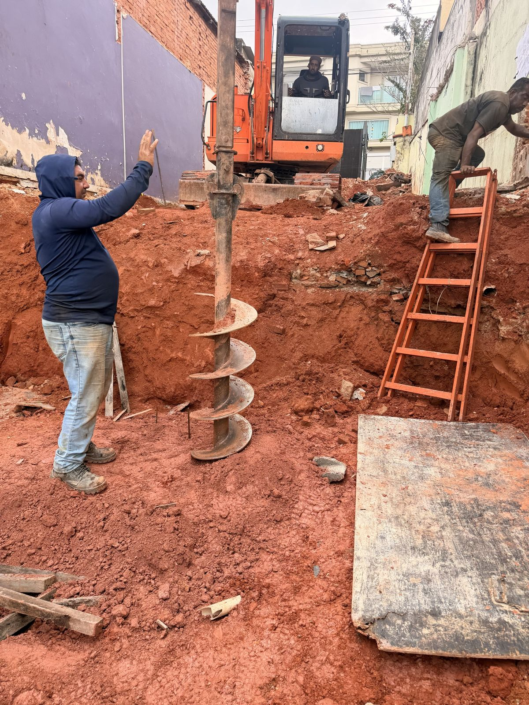
Perfuração com trado helicoidal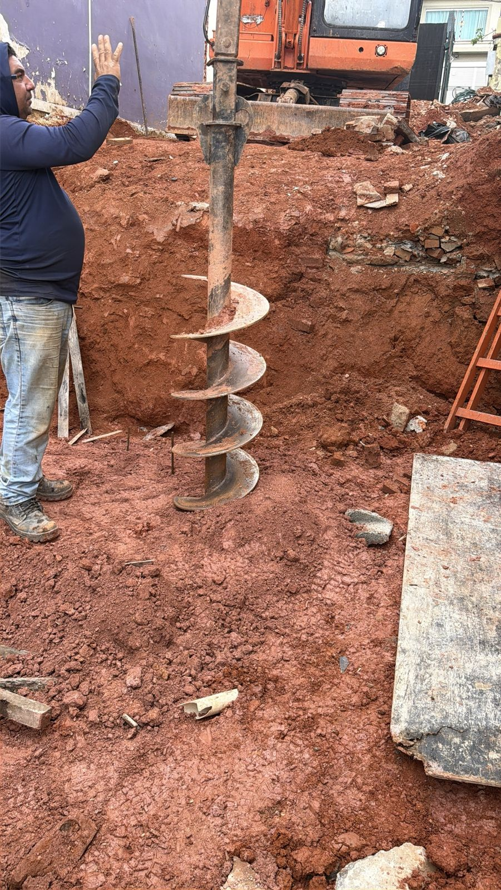
Detalhe do trado e do solo escavado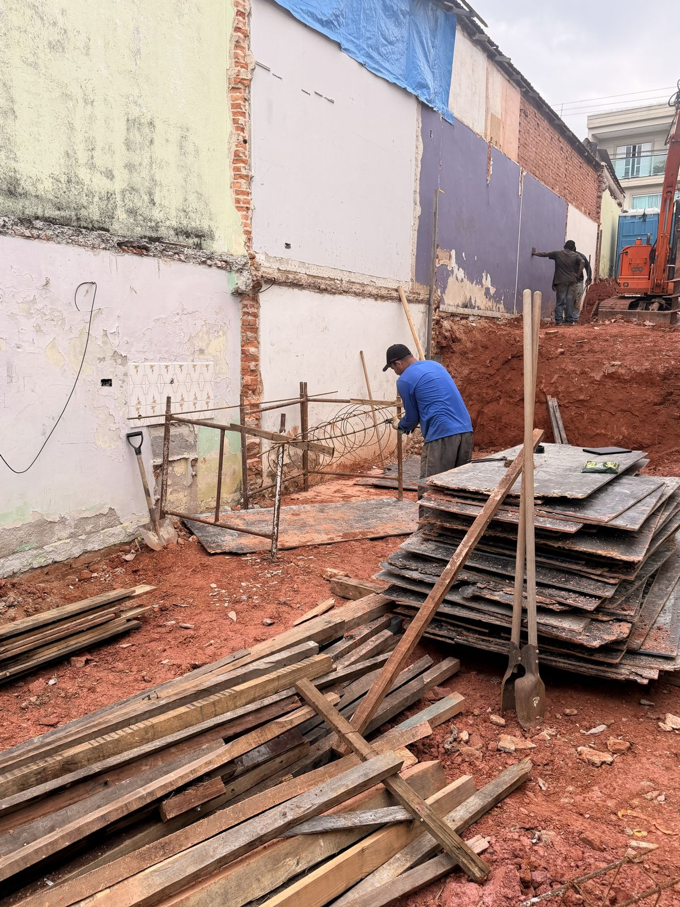
Montagem da armação e formas em estoque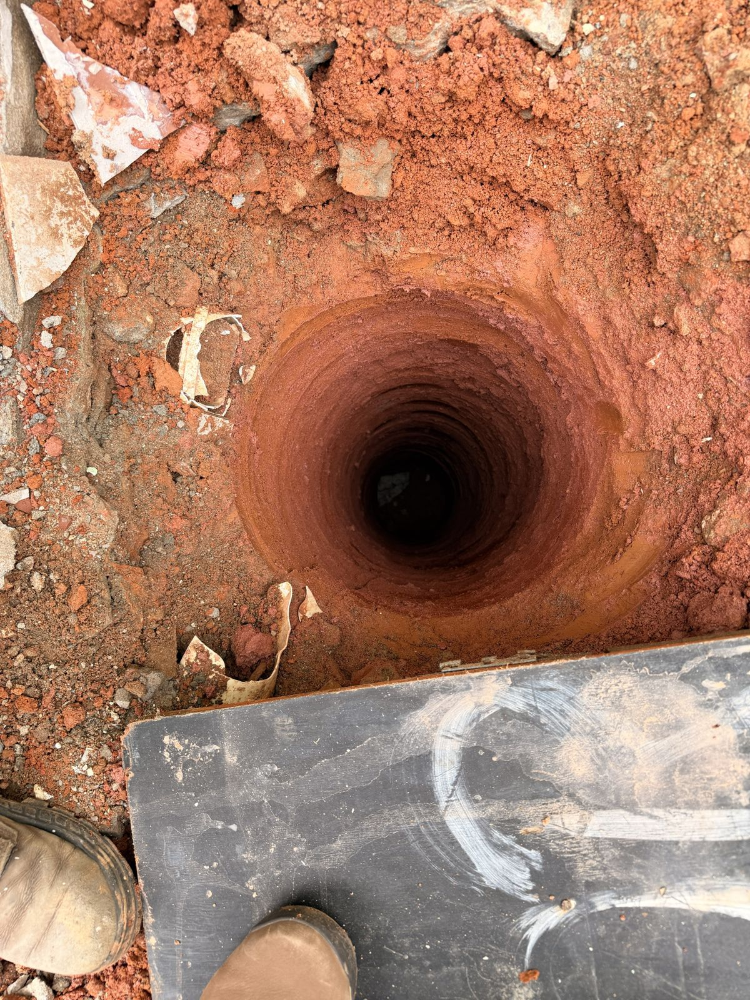
Furo aberto visto de cimaToque em uma foto para abrir em tamanho maior. As fases anteriores à perfuração estão registradas sem data de campo.